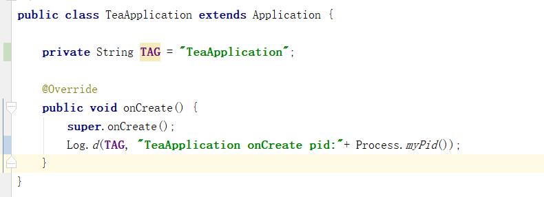
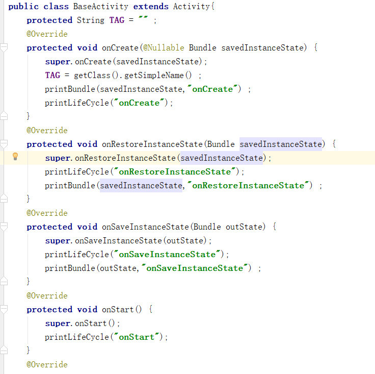
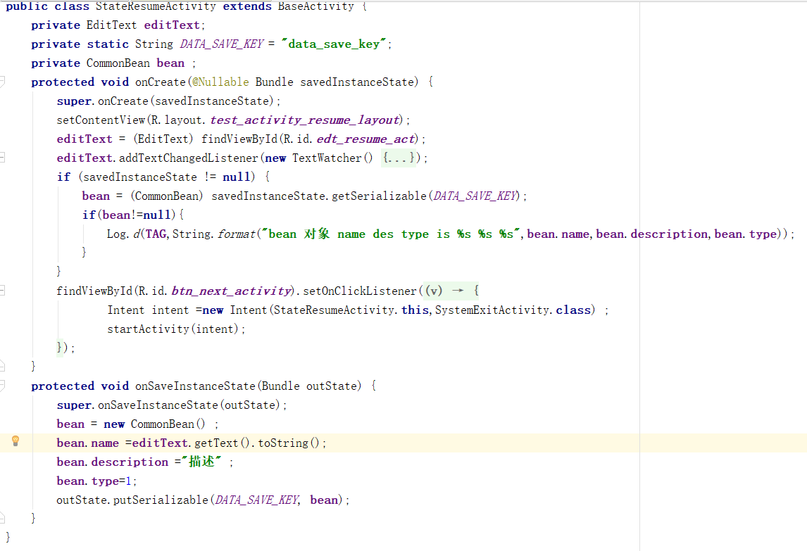
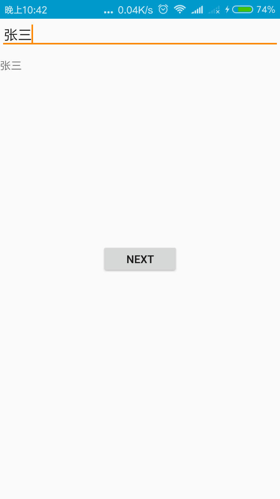
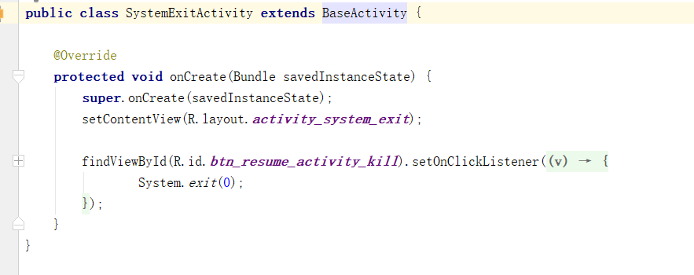

1.代码及对应的页面效果
1.1 App和activity的log


1.2 状态保存界面的代码及界面效果


1.3 退出app界面的代码及效果

2.Activity的状态保存
03-21 22:44:16.558 11538-11538/com.teach.yo.codeshop D/TeaApplication: TeaApplication onCreate pid:11538
app进程第一次启动 进程id 11538
03-21 22:44:16.627 11538-11538/com.teach.yo.codeshop D/ActivityMain: Method:onCreate bundle == null
主界面第一次启动 进入oncreate方法 bundle==null ，之前没有保存状态
03-21 22:44:16.627 11538-11538/com.teach.yo.codeshop D/ActivityMain: printLifeCycle:onCreate
03-21 22:44:16.660 11538-11538/com.teach.yo.codeshop D/ActivityMain: printLifeCycle:onStart
03-21 22:44:16.666 11538-11538/com.teach.yo.codeshop D/ActivityMain: printLifeCycle:onResume
开始启动状态保存界面
03-21 22:44:20.160 11538-11538/com.teach.yo.codeshop D/ActivityMain: printLifeCycle:onPause
03-21 22:44:20.181 11538-11538/com.teach.yo.codeshop D/StateResumeActivity: Method:onCreate bundle == null
状态保存界面第一次启动 进入oncreate方法 bundle==null ，之前没有保存状态
03-21 22:44:20.181 11538-11538/com.teach.yo.codeshop D/StateResumeActivity: printLifeCycle:onCreate
03-21 22:44:20.199 11538-11538/com.teach.yo.codeshop D/StateResumeActivity: printLifeCycle:onStart
03-21 22:44:20.204 11538-11538/com.teach.yo.codeshop D/StateResumeActivity: printLifeCycle:onResume
03-21 22:44:20.556 11538-11538/com.teach.yo.codeshop D/ActivityMain: printLifeCycle:onSaveInstanceState
03-21 22:44:20.557 11538-11538/com.teach.yo.codeshop D/ActivityMain:
Method:onSaveInstanceState--key:android:viewHierarchyState--value:Bundle[{android:views={16908290=android.view.AbsSavedState$1@308f252,
2131624079=AbsListView.SavedState{2105923 selectedId=-9223372036854775808 firstId=6 viewTop=-78 position=6 height=1232
filter=null checkState=null}}, android:focusedViewId=2131624079}]
03-21 22:44:20.558 11538-11538/com.teach.yo.codeshop D/ActivityMain: printLifeCycle:onStop
main界面onPause-onStop之间，走了状态保存界面的创建显示流程 ，然后走onSaveInstanceState 保存了view的状态
启动第三个界面，准备杀掉进程
03-21 22:44:24.708 11538-11538/com.teach.yo.codeshop D/StateResumeActivity: printLifeCycle:onPause
03-21 22:44:24.737 11538-11538/com.teach.yo.codeshop D/SystemExitActivity: Method:onCreatebundle == null
03-21 22:44:24.737 11538-11538/com.teach.yo.codeshop D/SystemExitActivity: printLifeCycle:onCreate
03-21 22:44:24.747 11538-11538/com.teach.yo.codeshop D/SystemExitActivity: printLifeCycle:onStart
03-21 22:44:24.752 11538-11538/com.teach.yo.codeshop D/SystemExitActivity: printLifeCycle:onResume
03-21 22:44:25.090 11538-11538/com.teach.yo.codeshop D/StateResumeActivity: printLifeCycle:onSaveInstanceState
03-21 22:44:25.091 11538-11538/com.teach.yo.codeshop D/StateResumeActivity:
Method:onSaveInstanceState--key:android:viewHierarchyState--value:Bundle[{android:views={16908290=android.view.AbsSavedState$1@308f252,
2131624081=TextView.SavedState{a4a5ff1 start=2 end=2 text=张三}, 2131624082=android.view.AbsSavedState$1@308f252,
2131624083=android.view.AbsSavedState$1@308f252}, android:focusedViewId=2131624081}]
03-21 22:44:25.093 11538-11538/com.teach.yo.codeshop D/StateResumeActivity: printLifeCycle:onStop
状态保存界面onPause-onStop之间，走了状态保存界面的创建显示流程 ，然后走onSaveInstanceState 保存了view的状态
点击退出按钮，让系统杀掉进程，但是我们还是看到了状态保存界面，且之前输入的信息信息仍旧显示在控件上
4.Activity的状态保存
03-21 22:47:15.167 15024-15024/com.teach.yo.codeshop D/TeaApplication: TeaApplication onCreate pid:15024
进程重新启动 新的进程id 15024
启动状态恢复界面 注：不是主界面
03-21 22:47:15.245 15024-15024/com.teach.yo.codeshop D/StateResumeActivity:
Method:onCreate--key:data_save_key--value:com.teach.yo.codeshop.bean.CommonBean@93a2194
03-21 22:47:15.245 15024-15024/com.teach.yo.codeshop D/StateResumeActivity:
Method:onCreate--key:android:viewHierarchyState--value:Bundle[mParcelledData.dataSize=660]
03-21 22:47:15.246 15024-15024/com.teach.yo.codeshop D/StateResumeActivity: printLifeCycle:onCreate
03-21 22:47:15.360 15024-15024/com.teach.yo.codeshop D/StateResumeActivity: bean 对象 name des type is 张三 描述 1
onCreate方法中 bundle携带了之前保存对的view的状态 以及重写onSaveInstanceState所保存的bean数据
03-21 22:47:15.364 15024-15024/com.teach.yo.codeshop D/StateResumeActivity: printLifeCycle:onStart
03-21 22:47:15.366 15024-15024/com.teach.yo.codeshop D/StateResumeActivity: printLifeCycle:onRestoreInstanceState
03-21 22:47:15.367 15024-15024/com.teach.yo.codeshop D/StateResumeActivity:
Method:onRestoreInstanceState--key:data_save_key--value:com.teach.yo.codeshop.bean.CommonBean@93a2194
03-21 22:47:15.367 15024-15024/com.teach.yo.codeshop D/StateResumeActivity:
Method:onRestoreInstanceState--key:android:viewHierarchyState--value:Bundle[{android:views={16908290=android.view.AbsSavedState$1@eb85fcb,
2131624081=TextView.SavedState{3b2d3a8 start=2 end=2 text=张三}, 2131624082=android.view.AbsSavedState$1@eb85fcb,
2131624083=android.view.AbsSavedState$1@eb85fcb}, android:focusedViewId=2131624081}]
onRestoreInstanceState bundle携带了之前保存对的view的状态 以及重写onSaveInstanceState所保存的bean数据
03-21 22:47:15.378 15024-15024/com.teach.yo.codeshop D/StateResumeActivity: printLifeCycle:onResume
03-21 22:47:25.180 15024-15024/com.teach.yo.codeshop D/StateResumeActivity: printLifeCycle:onPause
点击返回按钮 状态保存界面pause
03-21 22:47:25.219 15024-15024/com.teach.yo.codeshop D/ActivityMain:
Method:onCreate--key:android:viewHierarchyState--value:Bundle[mParcelledData.dataSize=320]
03-21 22:47:25.219 15024-15024/com.teach.yo.codeshop D/ActivityMain: printLifeCycle:onCreate
03-21 22:47:25.240 15024-15024/com.teach.yo.codeshop D/ActivityMain: printLifeCycle:onStart
03-21 22:47:25.241 15024-15024/com.teach.yo.codeshop D/ActivityMain: printLifeCycle:onRestoreInstanceState
03-21 22:47:25.241 15024-15024/com.teach.yo.codeshop D/ActivityMain:
Method:onRestoreInstanceState--key:android:viewHierarchyState--value:Bundle[{android:views={16908290=android.view.AbsSavedState$1@eb85fcb,
2131624079=AbsListView.SavedState{8964138 selectedId=-9223372036854775808 firstId=6 viewTop=-78 position=6 height=1232
filter=null checkState=null}}, android:focusedViewId=2131624079}]
03-21 22:47:25.246 15024-15024/com.teach.yo.codeshop D/ActivityMain: printLifeCycle:onResume
03-21 22:47:25.552 15024-15024/com.teach.yo.codeshop D/StateResumeActivity: printLifeCycle:onStop
状态保存界面onPause-onStop之间，走了main界面的创建显示流程，且恢复了状态，但是没走状态保存界面的onSaveInstanceState 保存了view的状态
总结
- 状态保存的时机是在onPause之后，onStop之前
- 点击finis后，当前界面是不保存状态的，其他情况下（activity被其他activity覆盖等）会保存
- exit()方法在Android中是适用的，之所以感觉进程没被杀死，是因为进程被杀掉后，立刻被系统重建了
- 状态恢复步骤，先重建进程，然后直接恢复目标Activity状态，也就是说此时进程中activity个数为1
- launchActivity初始化全局的东西是没有保障的，因为状态恢复的时候很可能不走launch界面
- Android 系统只可能杀掉进程，不会强制把某个activity回收了的。activity的对象回收归gc管
- 系统级别view的状态保存已经默认实现了，Activity状态恢复的时候会一起恢复过来，自定义view要自己实现
参考文章
Android源码解析（二十四）-->onSaveInstanceState执行时机